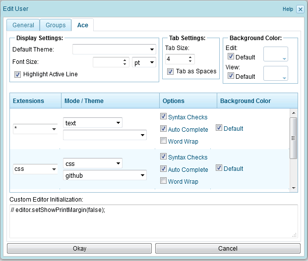

Configuration
After the Ace Text Highlighting plug-in has been installed and loaded, the user-profile dialog has an additional tab named "Ace":

Figure 1. Ace configuration
If the configuration is unchanged, then a default highlight configuration is used. Different highlight configurations can be configured for text-files with different file-extension.
Display Settings
The "Display Settings" panel allows to set the default color scheme and font-size. Furthermore, the "Highlight Active Line" checkbox defines, whether the line of the current cursor position shall be highlighted by a different background-color, or not.
Tab Settings
The "Tab Settings" panel defines whether to replace tabs by a configurable number of spaces, or not.
Background Color
The "Background Color" panel allows to define the background-color that the editor shall use for the editing and viewing of files. If the "Default" checkbox is checked, then the background-color is defined by the selected color scheme.
Defining syntax highlighting for text-files and content-nodes
To define syntax highlighting for a specific file-format, enter the desired file-extension in the Extensions field (or select the file-extension from the drop-down list) and select the syntax and color scheme from the Mode/Theme listboxes.
To define syntax highlighting for content-nodes (XHTML), enter "content" in the Extensions field and select "html" or "xml" from the Mode-listbox.
Lines with an empty Extensions field are automatically removed. Therefore, to delete a configuration, clear the file-extension from the Extensions field.
Custom Editor Initialization
The "Custom Editor Initialization" input field allows to configure JavaScript code to be executed on editor initialization. The JavaScript variable "editor" contains the Ace JavaScript instance. For more information see the Ace documentation on the Ace homepage.